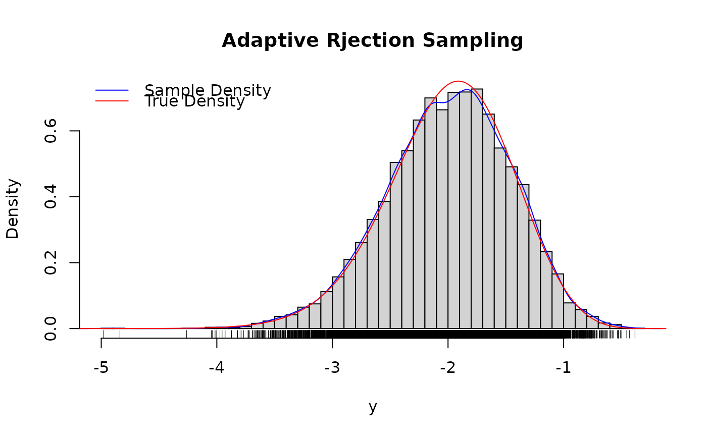

R/utils.R
log_f_logden.RdThis function is used in sampling a model with infinite number of columns in H
log_f_logden(log_p0, alpha, t)| log_p0 | log probability (the argument of this function) |
|---|---|
| alpha | hyperparameter for Indian Buffet Process (Infinite version) |
| t | the number of rows in the IBP |
a value corresponding to the log density f(log_p0)
library(ars)
n_grid <- 10000
p0_grid <- seq(log(0.001),0,len=n_grid)
y_den <- log_f_logden(p0_grid,5,8)
y <- ars::ars(n_grid,log_f_logden,log_f_logprima,
c(-6,-4,-2,-1),m=4,
ub=TRUE,xub=0,alpha=5,t=8)
hist(y,breaks="Scott",main='Adaptive Rjection Sampling',freq=FALSE)
rug(y)
points(density(y),type="l",col="blue")
points(p0_grid,exp(y_den-rewind:::logsumexp(y_den)-log(diff(p0_grid)[2])),
type="l",col="red") # <-- true density; log_f_logden is only
# correct upto a proportionality constant.
legend("topleft",c("Sample Density","True Density"),lty=c(1,1),col=c("blue","red"),
bty="n")
